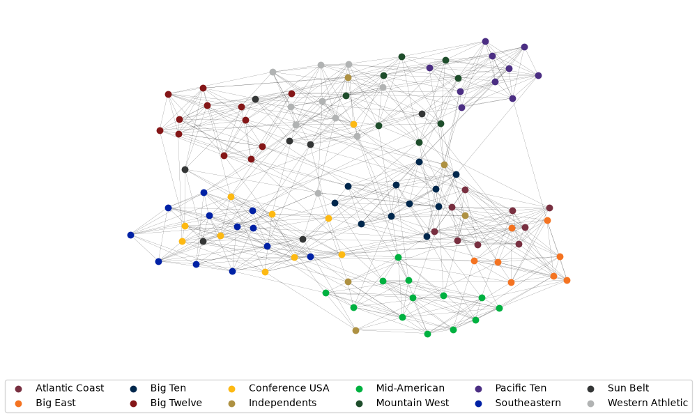

Note
Go to the end to download the full example code.
Football#
Load football network in GML format and compute some network statistics. Data provided by authors of [1]
Shows how to unpack a zipped GML file and load it into a NetworkX graph. This example uses the pathlib library for filename manipulation.
The data file can be found at:

The file football.gml contains the network of American football games
between Division IA colleges during regular season Fall 2000, as compiled
by M. Girvan and M. Newman. The nodes have values that indicate to which
conferences they belong. The values are as follows:
0 = Atlantic Coast
1 = Big East
2 = Big Ten
3 = Big Twelve
4 = Conference USA
5 = Independents
6 = Mid-American
7 = Mountain West
8 = Pacific Ten
9 = Southeastern
10 = Sun Belt
11 = Western Athletic
If you make use of these data, please cite M. Girvan and M. E. J. Newman,
Community structure in social and biological networks,
Proc. Natl. Acad. Sci. USA 99, 7821-7826 (2002).
Correction: Two edges were erroneously duplicated in this data set, and
have been removed (21 SEP 2014)
BrighamYoung 12
FloridaState 12
Iowa 12
KansasState 12
NewMexico 11
TexasTech 12
PennState 12
SouthernCalifornia 12
ArizonaState 11
SanDiegoState 11
Baylor 10
NorthTexas 10
NorthernIllinois 10
Northwestern 11
WesternMichigan 10
Wisconsin 12
Wyoming 11
Auburn 11
Akron 11
VirginiaTech 11
Alabama 11
UCLA 11
Arizona 11
Utah 11
ArkansasState 10
NorthCarolinaState 11
BallState 10
Florida 11
BoiseState 9
BostonCollege 11
WestVirginia 11
BowlingGreenState 11
Michigan 11
Virginia 10
Buffalo 11
Syracuse 11
CentralFlorida 8
GeorgiaTech 11
CentralMichigan 11
Purdue 11
Colorado 11
ColoradoState 10
Connecticut 7
EasternMichigan 11
EastCarolina 11
Duke 11
FresnoState 11
OhioState 11
Houston 11
Rice 11
Idaho 9
Washington 11
Kansas 10
SouthernMethodist 12
Kent 10
Pittsburgh 11
Kentucky 10
Louisville 10
LouisianaTech 10
LouisianaMonroe 8
Minnesota 11
MiamiOhio 11
Vanderbilt 11
MiddleTennesseeState 9
Illinois 11
MississippiState 11
Memphis 11
Nevada 12
Oregon 11
NewMexicoState 11
SouthCarolina 11
Ohio 10
IowaState 11
SanJoseState 11
Nebraska 11
SouthernMississippi 10
Tennessee 11
Stanford 11
WashingtonState 11
Temple 11
Navy 11
TexasA&M 11
NotreDame 11
TexasElPaso 11
Oklahoma 11
Toledo 9
Tulane 11
Mississippi 11
Tulsa 12
NorthCarolina 11
UtahState 9
Army 11
Cincinnati 11
AirForce 10
Rutgers 10
Georgia 10
LouisianaState 10
LouisianaLafayette 8
Texas 11
Marshall 10
MichiganState 11
MiamiFlorida 10
Missouri 10
Clemson 10
NevadaLasVegas 12
WakeForest 10
Indiana 11
OklahomaState 10
OregonState 10
Maryland 11
TexasChristian 11
California 11
AlabamaBirmingham 10
Arkansas 10
Hawaii 11
from pathlib import Path
import zipfile
import matplotlib.pyplot as plt
import networkx as nx
with zipfile.ZipFile(Path.cwd() / "football.zip") as zf: # zipfile object
txt = zf.read("football.txt").decode() # read info file
gml = zf.read("football.gml").decode() # read gml data
# throw away bogus first line with # from mejn files
gml = gml.split("\n")[1:]
G = nx.parse_gml(gml) # parse gml data
print(txt)
# print degree for each team - number of games
for n, d in G.degree():
print(f"{n:20} {d:2}")
# Extract conference data from the text
conf_data = txt.split("\n\n")[1].split("\n")
# Color nodes by primary color of conference champions (from Wikipedia)
# fmt: off
champ_clrs = [
"#782F40", "#F47321", "#00274C", "#841617", "#FDB913", "#AE9142", "#00B140",
"#1E4D2B", "#4b2e83", "#0021A5", "#343636", "#B1B3B3"
]
# fmt: on
conf_mapping = {}
for line, clr in zip(conf_data, champ_clrs):
conf_key, conf_name = line.split("=")
conf_mapping[int(conf_key)] = {"name": conf_name.strip(), "color": clr}
pos = nx.spring_layout(G, seed=1969) # Seed for reproducible layout
fig, ax = plt.subplots(figsize=(10, 6))
# Draw nodes for each conference separately to populate handles for a legend
opts = {"node_size": 50, "linewidths": 0}
for conf, data in conf_mapping.items():
nodes = [n for n, c in G.nodes(data="value") if c == conf]
label = data["name"]
color = data["color"]
nx.draw_networkx_nodes(
G, pos=pos, ax=ax, nodelist=nodes, label=label, node_color=color, **opts
)
ax.legend(loc=8, ncols=6, bbox_to_anchor=(0.5, -0.15))
# Draw edges
nx.draw_networkx_edges(G, pos=pos, ax=ax, width=0.1)
ax.set_axis_off()
fig.tight_layout()
plt.show()
Total running time of the script: (0 minutes 0.218 seconds)